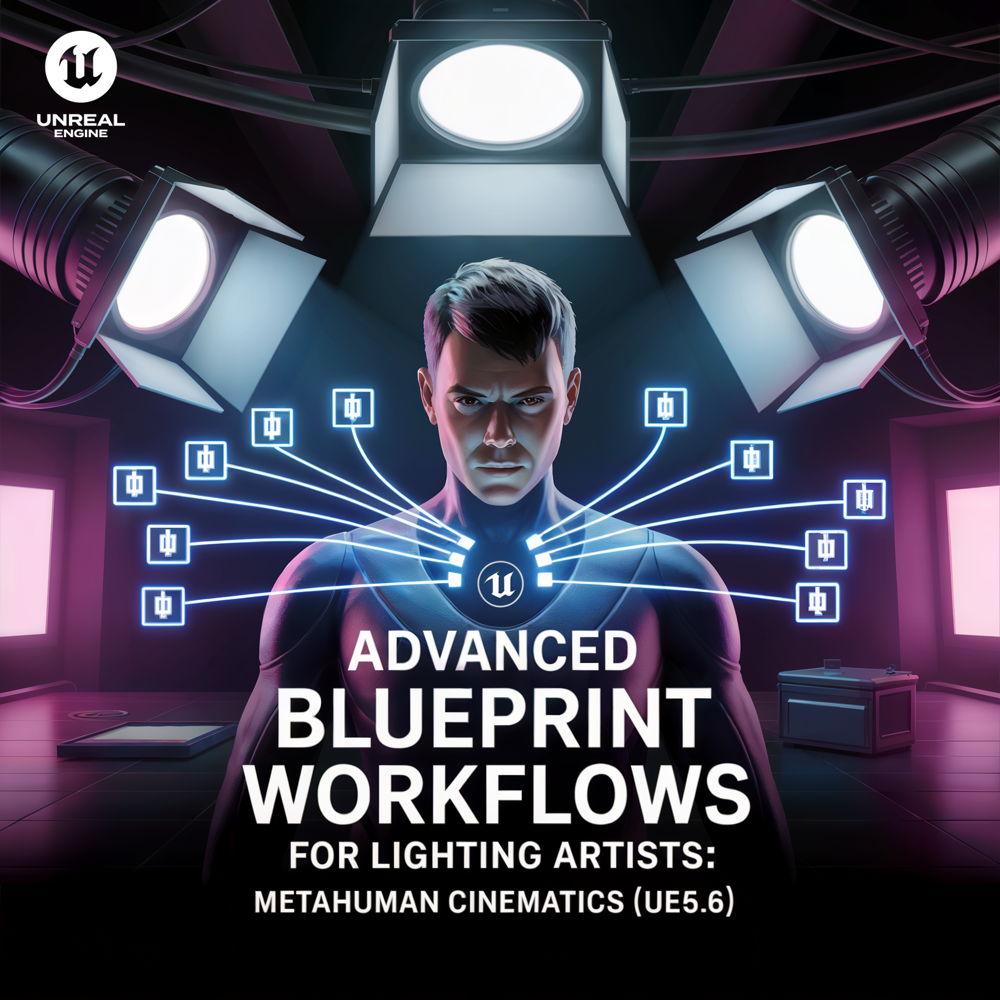

언리얼 5.6 블루프린트 기초 – 라이팅 아티스트를 위한 입문

핵심 학습
- 블루프린트 기초 문법 (변수, 이벤트, 함수)
- 라이트 제어 (On/Off, Intensity, Color)
- 라이트 픽스처(Light Fixture) 블루프린트 제작
- 포인트/스팟 라이트 + 메시(Mesh) 조합
- 노출 변수로 밝기/색상 제어 가능
결과물
스위치로 제어 가능한 방 안의 라이트 픽스처
언리얼 5.6 블루프린트 응용 – 시네마틱 라이팅과 스카이 돔

핵심 학습
- 시퀀서 + 블루프린트 연동 (이벤트 기반 컷신)
- 타임라인으로 낮/밤 전환 구현
- 스카이 돔(Sky Dome) 블루프린트 제작
- 태양/달 고도 변경 및 색/강도 연동
- 라이트/포스트프로세스 파라미터 제어
결과물
스카이 돔과 라이트가 연동되는 낮/밤이 전환되는 시네마틱 씬
언리얼 5.6 블루프린트 심화 – 메타휴먼 시네마틱과 프로덕션 워크플로우

핵심 학습
- 컨스트럭션 스크립트(Construction Script)로 라이트 픽스처 대량 배치/관리
- 최적화: LOD, Culling, Event Tick 최소화
- 메타휴먼 + 시퀀서: 연기 타이밍에 맞춘 라이트 연출
- 머티리얼/포스트프로세스 파라미터 동기화
결과물
메타휴먼 연기와 스카이 돔/라이트 픽스처/라이트 연출이 동기화된 프로덕션급 시네마틱